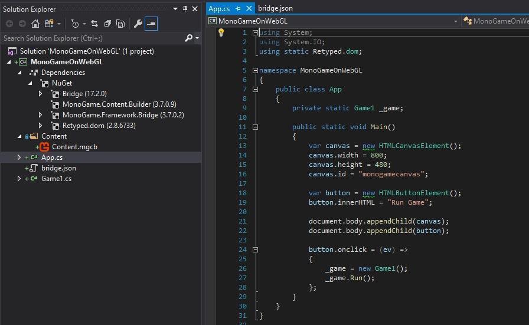
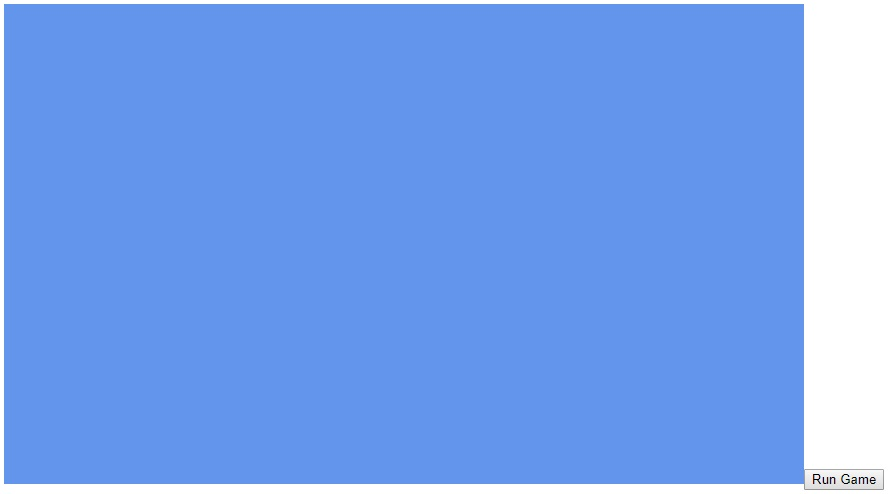
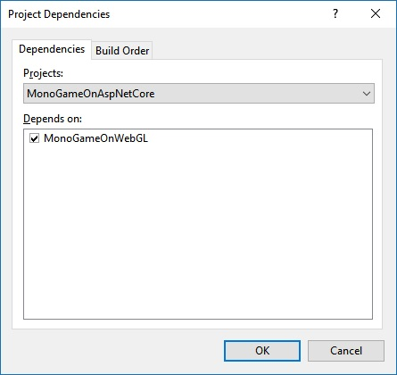
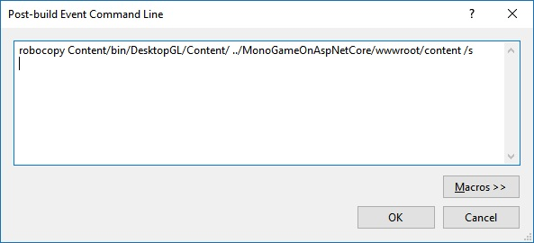

MonoGame on WebGL
by Dylan Wilson on 07 May 2019In short, there's 4 basic steps to getting MonoGame up and running on your web site.
- Install the
dotnet newproject template - Create a new MonoGame WebGL project
- Put the JavaScript files on your website
- Setup a content workflow
In the following tutorial I'm going to take you through the steps I took to get MonoGame working on an ASP.NET Core website. Hopefully providing enough detail that you can get it working on your website.
A word of caution
MonoGame WebGL is in alpha! If you plan to use it for a production project make sure you're aware that there are some limitations.
This is an alpha release of MonoGames web version, there are several parts unimplemented, as such, do not expect everything to work out of the box. Feel free to report any issues you find on the MonoGame GitHub issue tracker, I'll prioritize implementing stuff that you request.
The web version of MonoGame requires WebGL 2 and has support for Chrome, Firefox, Opera and Vivaldi web browsers.
Currently the web version is getting compiled to JS using Bridge.NET, this is however only a temporary solution and we'll switch to using WebAssembly (WASM) once C# -> WASM conversion gets to a more stable point. This will greatly improve performance.
That said, what you can do with it already is pretty neat. Checkout the Platformer 2D demo on the MonoGame website.
Without further ado, let's get started.
Install the MonoGame Bridge template
The MonoGame.Template.Bridge.CSharp NuGet package is a project template for dotnet new that
cra0zy created from his MonoGame fork. To get started let's install the template so we can create our project.
dotnet new --install MonoGame.Template.Bridge.CSharp
Once the template is installed you should see a new template called MonoGame WebGL Game or mgbridge in the list.
Create the MonoGame WebGL project
Once you've got the template installed make a new directory for your project and generate the files. I'm going to call mine MonoGameOnWebGL . You can find my
implementation on github.
mkdir MonoGameOnWebGL
cd MonoGameOnWebGL
dotnet new mgbridge
After running the above commands you should see a handful of files including a MonoGameOnWebGL.csproj project file. Next, open the project file in Visual Studio or your
favorite IDE.
You might have noticed there's no solution (.sln) file in the directory. That's normal for projects created with dotnet new. The first time you save the
project in Visual Studio it will offer to create a solution file for you.
Building the project
At first glance, the new project looks a bit like a normal MonoGame project with a Game1.cs class and a Content.mgcb file.

There's also a weird looking App.cs file and a bridge.json file. If you try to run the project at this point you'll be surprised to find that we're actually
looking at a class library and it can't be started directly.
So what's going on here? Well, those extra files are part of Bridge.NET, an open source C# to JavaScript compiler. When you compile this library the C# code is getting transpiled into a bunch of JavaScript files so they can be run in a browser.
Take a look in the bin\Debug\net47 folder after building and you'll see a bunch of .js files along with an index.html file. Double click the
index.html file and if all goes well, you should see the familiar cornflower blue rendered in your browser. Jinkies!

Putting it on an ASP.NET Core website
We've got the basics out of the way but it turns out if you try and do anything useful, like say, loading a texture you'll probably run into some issues. This is because most browsers (except Firefox) won't allow "cross origin requests" when you're running from the local file system.
To rectify this, let's get ourselves a real website.
Technically speaking, you can use any kind of website framework you like. After all, it's just JavaScript and HTML. For the purpose of this tutorial I'll be using ASP.NET Core which, to be honest, has a few challenges.
First, add a new ASP.NET Core Web Application project to the solution. I called mine MonoGameOnAspNetCore.
Next, we need to setup dependencies between the two projects. My first reaction to this problem was to add the MonoGameOnWebGL project as a reference to web
application. Ordinarily that should work but because we're mixing target frameworks, net472 and netcoreapp2.2 things get a little hairy.
Fortunately, the projects only have a "soft" dependency in the sense that we need our JavaScript to be compiled before we can run the website. Using Visual Studio there's a little trick we can do to make this happen without actually adding a "hard" reference dependency between them.
- Right click the solution and select Project Dependencies...
- In the dialog, make sure the MonoGameOnAspNetCore project depends on the MonoGameOnWebGL project.

This will force the MonoGameOnWebGL project to be compiled before the website if we make any changes to it.
Now, we need to make it so that the JavaScript files are copied into our website so that we can use them on the web pages. To do this, edit the bridge.json file and change
the output folder to somewhere in the wwwroot folder. While we're at it, lets disable the generation of the index.html file since we won't need it anymore.
For example:
{
"output": "../MonoGameOnAspNetCore/wwwroot/monogameonwebgl",
"html": {
"disabled": true
},
...
}
Compile the web application and voila, we have the JavaScript files ready to go in our web application.
Finally, we can include the JavaScript files into whatever pages we want to render the MonoGame canvas.
<script src="\monogameonwebgl\bridge.min.js"></script>
<script src="\monogameonwebgl\bridge.console.min.js"></script>
<script src="\monogameonwebgl\bridge.meta.min.js"></script>
<script src="\monogameonwebgl\MonoGame.Framework.min.js"></script>
<script src="\monogameonwebgl\MonoGame.Framework.meta.min.js"></script>
<script src="\monogameonwebgl\MonoGameOnWebGL.min.js"></script>
<script src="\monogameonwebgl\MonoGameOnWebGL.meta.min.js"></script>
Loading Content
The final challenge is loading content. This is a 2 part problem.
Copy content with a post build step
The first problem is that the MonoGame Content Builder is building the content in the MonoGameOnWebGL project but we need that content somewhere in the
wwwroot folder of our website.
There might be more than one way to solve this problem. I chose to copy the XNB files to the content folder in wwwroot as a post build step. To be honest,
this solution feels a little hacky but it's the simplest solution I could think of so I rolled with it.

robocopy Content/bin/DesktopGL/Content/ ../MonoGameOnAspNetCore/wwwroot/content /s
Allow XNB files as static content
By default, an ASP.NET Core website is not configured to allow XNB files to be downloaded with it's static file handler. To enable this we need to setup a file extension content type provider.
var provider = new FileExtensionContentTypeProvider
{
Mappings = { [".xnb"] = "application/xnb" }
};
app.UseStaticFiles(new StaticFileOptions { ContentTypeProvider = provider });
And that's it. We're finally able to run MonoGame in most of the leading web browsers.
Conclusion
Despite being in development with an alpha status running MonoGame in a web browser is certainly possible. Once you understand what's going on under the hood it's fairly straightforward to get things up and running on any website as static content.
Although there are some limitations it could be very useful to be able to run a demo of your game or write interactive tutorials.
References
- MonoGame inside your web browser
- MonoGame for Web (Alpha Release)
- MonoGame Web Demo
- Getting started with Bridge.NET
- cra0zy's WebGL Missing Stuff